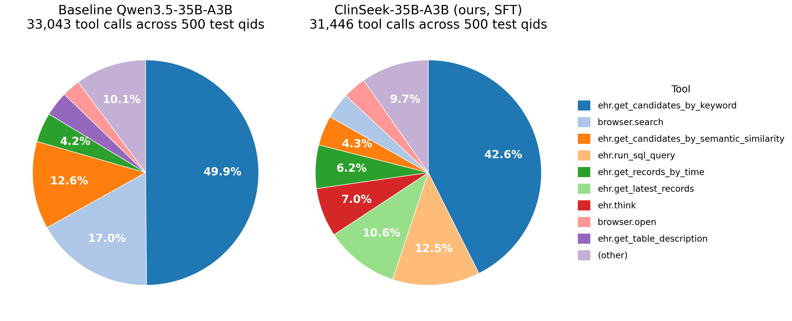

findings — SFT vs baseline Qwen3.5-35B-A3B. Training data: 3,000 questions from the AgentEHR train split × 3 Opus-4.6 rollouts each ≈ 9K distilled trajectories. Evaluation: AgentEHR test split, 5 tasks × 100 random questions = 500 qids.
TL;DR. We sample 3,000 questions from the AgentEHR training split, let the ClinSeek agentic pipeline roll out 3 Claude-Opus-4.6 trajectories per question (≈ 9,000 teacher trajectories), and do 2 epochs of SFT on the Qwen3.5-35B-A3B base. On the AgentEHR test split we evaluate on 5 tasks × 100 randomly-sampled questions = 500 qids; the same 500 qids are used for the baseline. This lifts 5-task F1 from 22.1 → 34.0 (+11.9 pp), putting ClinSeek-35B-A3B above every open-source peer we tested — including the much larger Kimi K2.5, MiniMax-M2.5, and GLM-4.7 — and closing the gap to the Opus teacher to 2.0 pp.
We compare the 11 open-source and 2 proprietary hosts we have full Sheet1 results for,
on the 5-task subset covered by our SFT run (diagnoses, labevents, microbiology events,
procedures, transfers). Numbers are F1×100; the "Avg (5-task)" column is the arithmetic mean
across the five shared tasks so that every row is strictly comparable to the 500-qid ClinSeek
evaluation (5 tasks × 100 random AgentEHR test questions). The baseline and ClinSeek rows (highlighted)
are recomputed from the Letian2003/fh37931 HF dump on the same 500 test qids; other
rows are from DeepMed-Result.xlsx Sheet1.
| Model | diagnoses | labevents | microbiology events | procedures | transfers | Avg (5-task) |
|---|---|---|---|---|---|---|
| Claude Opus 4.6 (teacher) | 58.5 | 42.1 | 27.2 | 31.1 | 20.9 | 36.0 |
| ClinSeek-35B-A3B (ours, SFT on 9K trajectories) | 55.4 | 38.5 | 27.6 | 31.7 | 16.7 | 34.0 |
| Claude Sonnet 4.6 | 54.4 | 35.6 | 23.4 | 26.3 | 23.7 | 32.7 |
| Kimi K2.5 | 46.9 | 33.7 | 18.9 | 27.9 | 22.1 | 29.9 |
| MiniMax-M2.5 | 51.5 | 29.0 | 19.0 | 22.0 | 17.0 | 27.7 |
| GLM-4.7 | 46.4 | 28.6 | 16.6 | 23.7 | 22.9 | 27.6 |
| Qwen3.5-35B-A3B (baseline) | 36.6 | 17.7 | 16.2 | 21.9 | 18.1 | 22.1 |
| Qwen3-235B-A22B | 30.6 | 20.3 | 17.3 | 24.9 | 9.6 | 20.5 |
| Tongyi DeepResearch 30B-A3B | 25.8 | 14.9 | 8.8 | 17.9 | 13.2 | 16.1 |
| gpt-oss-120B | 27.3 | 12.8 | 12.4 | 19.1 | 7.6 | 15.8 |
| Gemma-4-26B-A4B-it | 17.9 | 18.5 | 19.7 | 11.2 | 8.8 | 15.2 |
| OpenSeeker v1 (30B) | 20.4 | 4.5 | 12.8 | 14.2 | 10.6 | 12.5 |
| Δ ClinSeek − baseline | +18.7 | +20.8 | +11.4 | +9.8 | -1.4 | +11.9 |
| Δ ClinSeek − teacher (Opus) | -3.1 | -3.6 | +0.4 | +0.6 | -4.2 | -2.0 |
results/DeepMed-Result.xlsx Sheet1; numbers for ClinSeek-35B-A3B
and the Qwen3.5-35B-A3B baseline are recomputed from the HF repository
Letian2003/fh37931 on the same 500 test qids so that "before/after" is a strict
A/B comparison on identical inputs.The headline take-away is that the distillation path — run ClinSeek with a proprietary teacher → collect trajectories → SFT the open-source base — transfers a large fraction of the teacher's agentic capability into a much smaller, locally-hostable model. It is especially notable that ClinSeek-35B-A3B outperforms GLM-4.7, Kimi K2.5 and MiniMax-M2.5: those models are larger and trained to be broadly capable agents, but on agentic EHR retrieval the distilled 35B-A3B specialist wins.
Per-call success rates of the two models are almost identical
(95.5% baseline vs 94.4% SFT on the same 500 test qids,
classifying any tool result starting with Error…/Traceback…/
Fetch error…/Error during search…/Error fetching URL…
as a failure and everything else as success). So the +11.9 pp F1 gain does not
come from the model making fewer tool errors. It comes from the model calling a
qualitatively different mix of tools.

We group the 20+ tools by the "SQL-under-the-hood" question — how flexible is the query
actually produced. Fixed SQL templates are wrappers that only expose 1-3 arguments
(the model picks a table and a keyword / time window / value); the actual query is hard-coded.
Free SQL is the single ehr.run_sql_query tool that lets the model write
an arbitrary SQL statement.
| Tool category | Baseline calls | share | SFT calls | share | Δ share |
|---|---|---|---|---|---|
| Fixed SQL templates (9 tools) | 19,323 | 58.5% | 20,055 | 63.8% | +5.3 pp |
| Free SQL (ehr.run_sql_query) | 649 | 2.0% | 3,932 | 12.5% | +10.5 pp |
| Fuzzy / semantic / description | 5,327 | 16.1% | 1,676 | 5.3% | -10.8 pp |
| Session primitives (load / think / finish) | 1,182 | 3.6% | 3,205 | 10.2% | +6.6 pp |
| Browser (web) | 6,562 | 19.9% | 2,576 | 8.2% | -11.7 pp |
| (other) | 0 | 0.0% | 2 | 0.0% | +0.0 pp |
| Total | 33,043 | 31,446 |
get_records_by_time,
get_event_counts_by_time, get_latest_records,
get_records_by_keyword, get_records_by_value,
get_unique_values, get_column_names, get_table_names,
get_candidates_by_keyword. Free SQL: run_sql_query. Fuzzy/semantic/description:
get_candidates_by_fuzzy_matching, get_candidates_by_semantic_similarity,
get_table_description. Session primitives: load_ehr, think,
finish.The two biggest movers are both consequences of the SFT model learning when to write its own SQL instead of chaining together templated calls:
browser.search to look up medical context; the SFT model discovered that for
MIMIC-IV questions the signal is in the DB, not on the web, and spends that budget on
timeline queries and SQL instead.get_latest_records 1.0 → 10.6%,
get_records_by_time 4.2 → 6.2%. The SFT also introduces use of tools
the baseline never calls — get_event_counts_by_time and
get_candidates_by_fuzzy_matching.ehr.think 0.8 → 7.0% (baseline barely uses
it; SFT uses it as a scratchpad between evidence-gathering steps).| Tool | base calls | base share | base err% | SFT calls | SFT share | SFT err% | Δ share |
|---|---|---|---|---|---|---|---|
ehr.get_candidates_by_keyword | 16,475 | 49.9% | 0.0% | 13,403 | 42.6% | 0.0% | -7.2 pp |
ehr.run_sql_query | 649 | 2.0% | 0.0% | 3,932 | 12.5% | 0.0% | +10.5 pp |
ehr.get_latest_records | 320 | 1.0% | 13.8% | 3,328 | 10.6% | 39.1% | +9.6 pp |
ehr.get_records_by_time | 1,400 | 4.2% | 15.3% | 1,959 | 6.2% | 18.1% | +2.0 pp |
ehr.think | 266 | 0.8% | 0.0% | 2,207 | 7.0% | 0.0% | +6.2 pp |
ehr.get_candidates_by_semantic_similarity | 4,161 | 12.6% | 0.0% | 1,348 | 4.3% | 0.0% | -8.3 pp |
browser.search | 5,622 | 17.0% | 18.0% | 1,173 | 3.7% | 0.4% | -13.3 pp |
browser.open | 870 | 2.6% | 18.9% | 1,048 | 3.3% | 3.1% | +0.7 pp |
ehr.get_candidates_by_fuzzy_matching | 0 | 0.0% | 0.0% | 328 | 1.0% | 0.0% | +1.0 pp |
ehr.get_event_counts_by_time | 0 | 0.0% | 0.0% | 54 | 0.2% | 0.0% | +0.2 pp |
Error during search for …
+ 164 Error fetching URL …
= 82% of all baseline error results. These are network / page-parse failures from a
policy that tries to web-search for almost every question.ehr.get_latest_records (74% of all SFT
error results). The teacher-generated trajectories sometimes called
get_latest_records on schema tables that have no timestamp (patients,
triage, drgcodes, …); the student picks up the pattern. Mostly harmless — the model
retries on a neighbouring table — but a clear target for the next SFT iteration.run_sql_query share and the corresponding drop in
web-browser reliance explain most of the F1 gain.findings_report.html — this documenttool_distribution_pies.png — Figure 1pairs.jsonl — one row per qid with baseline + SFT F1/precision/recall/tool_calls/predictionsper_task.json, summary.txt — per-task aggregatestool_stats_aligned.json — per-tool calls + error counts for both models on the 500 test qidsalign_pairs.py, plot_tool_pies.py, build_report.py — the scripts that produced everything